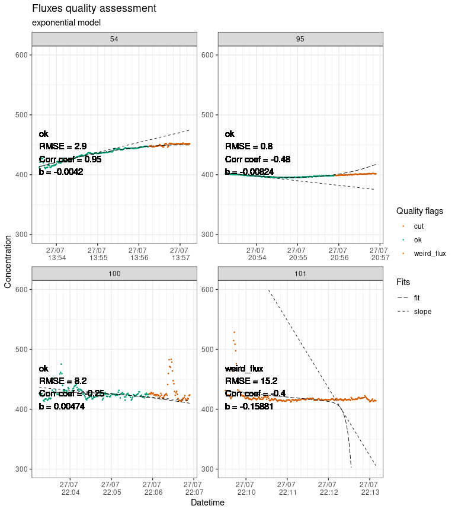

Note: fluxible is still in an early testing phase, please get in touch for any problems or suggestions.
The goal of fluxible is to provide a workflow that removes individual evaluation of each flux, reduces risk of bias, and makes it reproducible. Users set specific data quality standards and selection parameters as function arguments that are applied to the entire dataset. The package runs the calculations automatically, without prompting the user to take decisions mid-way, and provides quality flags and plots at the end of the process for a visual check. This makes it easy to use with large flux datasets and to integrate into a reproducible workflow. Using the Fluxible R package makes the workflow reproducible, increases compatibility across studies, and is more time efficient.
Installation
You can install the development version of fluxible from the GitHub repo with:
# install.packages("devtools")
devtools::install_github("jogaudard/fluxible")Example
This is a basic example with some sample data from the Plant Functional Traits Course 6 (2022). The flux_match function matches field measured gas concentration data with flux meta data:
library(fluxible)
conc_liahovden <- flux_match(co2_liahovden, record_liahovden)
head(conc_liahovden)
#> # A tibble: 6 × 13
#> f_datetime temp_air temp_soil f_conc PAR turfID type
#> <dttm> <dbl> <dbl> <dbl> <dbl> <chr> <chr>
#> 1 2022-07-27 05:37:40 NA NA 465. NA 4 AN1C 4 NEE
#> 2 2022-07-27 05:37:41 NA NA 465. NA 4 AN1C 4 NEE
#> 3 2022-07-27 05:37:42 NA NA 465. NA 4 AN1C 4 NEE
#> 4 2022-07-27 05:37:43 NA NA 464. NA 4 AN1C 4 NEE
#> 5 2022-07-27 05:37:44 NA NA 464. NA 4 AN1C 4 NEE
#> 6 2022-07-27 05:37:45 NA NA 463. NA 4 AN1C 4 NEE
#> # ℹ 6 more variables: f_start <dttm>, f_end <dttm>, f_fluxID <fct>,
#> # f_n_conc <int>, f_ratio <dbl>, f_flag_match <chr>To calculate a flux the slopes of each flux is necessary. The flux_fitting function can provide a linear or an exponential fit. Let’s start with a linear fit.
slopes_lin_liahovden <- flux_fitting(conc_liahovden, fit_type = "linear")
#> Warning in flux_fitting_lin(conc_df, start_cut = ((start_cut)), end_cut = ((end_cut)), :
#> fluxID 77 : slope was estimated on 194 points out of 210 seconds because data are missing
#> fluxID 85 : slope was estimated on 175 points out of 210 seconds because data are missing
head(slopes_lin_liahovden)
#> # A tibble: 6 × 22
#> f_datetime temp_air temp_soil f_conc PAR turfID type
#> <dttm> <dbl> <dbl> <dbl> <dbl> <chr> <chr>
#> 1 2022-07-27 05:37:40 NA NA 465. NA 4 AN1C 4 NEE
#> 2 2022-07-27 05:37:41 NA NA 465. NA 4 AN1C 4 NEE
#> 3 2022-07-27 05:37:42 NA NA 465. NA 4 AN1C 4 NEE
#> 4 2022-07-27 05:37:43 NA NA 464. NA 4 AN1C 4 NEE
#> 5 2022-07-27 05:37:44 NA NA 464. NA 4 AN1C 4 NEE
#> 6 2022-07-27 05:37:45 NA NA 463. NA 4 AN1C 4 NEE
#> # ℹ 15 more variables: f_start <dttm>, f_end <dttm>, f_fluxID <fct>,
#> # f_n_conc <int>, f_ratio <dbl>, f_flag_match <chr>, f_time <dbl>,
#> # f_cut <fct>, n_conc <int>, f_rsquared <dbl>, f_adj_rsquared <dbl>,
#> # f_pvalue <dbl>, f_intercept <dbl>, f_slope <dbl>, f_fit <dbl>To assess the quality of the fit we use flux_quality. This will add quality flags advising if the calculated slopes should be kept, or replaced by 0 or NA.
slopes_lin_liahovden <- flux_quality(slopes_lin_liahovden, fit_type = "lin")
head(slopes_lin_liahovden)
#> # A tibble: 6 × 25
#> f_datetime temp_air temp_soil f_conc PAR turfID type
#> <dttm> <dbl> <dbl> <dbl> <dbl> <chr> <chr>
#> 1 2022-07-27 05:37:40 NA NA 465. NA 4 AN1C 4 NEE
#> 2 2022-07-27 05:37:41 NA NA 465. NA 4 AN1C 4 NEE
#> 3 2022-07-27 05:37:42 NA NA 465. NA 4 AN1C 4 NEE
#> 4 2022-07-27 05:37:43 NA NA 464. NA 4 AN1C 4 NEE
#> 5 2022-07-27 05:37:44 NA NA 464. NA 4 AN1C 4 NEE
#> 6 2022-07-27 05:37:45 NA NA 463. NA 4 AN1C 4 NEE
#> # ℹ 18 more variables: f_start <dttm>, f_end <dttm>, f_fluxID <fct>,
#> # f_n_conc <int>, f_ratio <dbl>, f_flag_match <chr>, f_time <dbl>,
#> # f_cut <fct>, n_conc <int>, f_rsquared <dbl>, f_adj_rsquared <dbl>,
#> # f_pvalue <dbl>, f_intercept <dbl>, f_slope <dbl>, f_fit <dbl>,
#> # f_start_error <chr>, f_quality_flag <chr>, f_slope_corr <dbl>Users should still do a visual check with the flux_plot function. The flux_plot function plots all the fluxes with their fluxID, both modelled and measured concentration, and indicating quality flags with color codes. Those plots can be printed in the R console, but they will be saved as a pdf document for easier use. Depending on the plots the user can re-run flux_fitting with cuts at the start or the end of the measurements (applied to the entire dataset), change the type of fit, or decide to exclude specific fluxes using the ‘weird_fluxes’ argument.
slopes_lin_liahovden |>
dplyr::filter(f_fluxID %in% c(53:56)) |> # we just show a sample of the plots to avoid slowing down the example
flux_plot(
fit_type = "lin",
print_plot = TRUE,
f_plotname = "example_lia",
f_ylim_lower = 300,
f_ylim_upper = 600,
f_nrow = 1,
y_text_position = 400
)
#> [1] "Saving plots in f_quality_plots folder."
When using a linear fit, it might be better to use only a short portion at the start of the flux. We can re run flux_fitting with an end cut, then run flux_quality and flux_plot again to see if it is better.
slopes_lin_liahovden_120 <- conc_liahovden |>
flux_fitting(fit_type = "linear", end_cut = 120) |>
flux_quality(fit_type = "linear")
slopes_lin_liahovden_120 |>
dplyr::filter(f_fluxID %in% c(53:56)) |> # we just show a sample of the plots to avoid slowing down the example
flux_plot(
fit_type = "lin",
print_plot = TRUE,
f_plotname = "example_lia_lin",
f_ylim_lower = 300,
f_ylim_upper = 600,
f_nrow = 1,
y_text_position = 400
)
#> [1] "Saving plots in f_quality_plots folder."
The exponential fit is used in a similar way. It uses the exponential expression shown in Zhao et al. (2018).
slopes_exp_liahovden <- flux_fitting(conc_liahovden, fit_type = "exponential")
#> Warning in flux_fitting_exp(conc_df, start_cut = ((start_cut)), end_cut = ((end_cut)), :
#> fluxID 77 : slope was estimated on 194 points out of 210 seconds because data are missing
#> fluxID 85 : slope was estimated on 175 points out of 210 seconds because data are missing
head(slopes_exp_liahovden)
#> # A tibble: 6 × 30
#> f_datetime temp_air temp_soil f_conc PAR turfID type
#> <dttm> <dbl> <dbl> <dbl> <dbl> <chr> <chr>
#> 1 2022-07-27 05:37:40 NA NA 465. NA 4 AN1C 4 NEE
#> 2 2022-07-27 05:37:41 NA NA 465. NA 4 AN1C 4 NEE
#> 3 2022-07-27 05:37:42 NA NA 465. NA 4 AN1C 4 NEE
#> 4 2022-07-27 05:37:43 NA NA 464. NA 4 AN1C 4 NEE
#> 5 2022-07-27 05:37:44 NA NA 464. NA 4 AN1C 4 NEE
#> 6 2022-07-27 05:37:45 NA NA 463. NA 4 AN1C 4 NEE
#> # ℹ 23 more variables: f_start <dttm>, f_end <dttm>, f_fluxID <fct>,
#> # f_n_conc <int>, f_ratio <dbl>, f_flag_match <chr>, f_time <dbl>,
#> # f_cut <fct>, n_conc <int>, Cm_est <dbl>, a_est <dbl>, b_est <dbl>,
#> # tz_est <dbl>, f_Cz <dbl>, time_diff <dbl>, f_Cm <dbl>, f_a <dbl>,
#> # f_b <dbl>, f_tz <dbl>, f_slope_tz <dbl>, f_fit <dbl>, f_fit_slope <dbl>,
#> # f_start_z <dttm>Then the quality assessment. The default slope_col argument is for the linear fit, so we now have to specify it.
slopes_exp_liahovden <- flux_quality(slopes_exp_liahovden, fit_type = "expo", slope_col = "f_slope_tz")
head(slopes_exp_liahovden)
#> # A tibble: 6 × 37
#> f_datetime temp_air temp_soil f_conc PAR turfID type
#> <dttm> <dbl> <dbl> <dbl> <dbl> <chr> <chr>
#> 1 2022-07-27 05:37:40 NA NA 465. NA 4 AN1C 4 NEE
#> 2 2022-07-27 05:37:41 NA NA 465. NA 4 AN1C 4 NEE
#> 3 2022-07-27 05:37:42 NA NA 465. NA 4 AN1C 4 NEE
#> 4 2022-07-27 05:37:43 NA NA 464. NA 4 AN1C 4 NEE
#> 5 2022-07-27 05:37:44 NA NA 464. NA 4 AN1C 4 NEE
#> 6 2022-07-27 05:37:45 NA NA 463. NA 4 AN1C 4 NEE
#> # ℹ 30 more variables: f_start <dttm>, f_end <dttm>, f_fluxID <fct>,
#> # f_n_conc <int>, f_ratio <dbl>, f_flag_match <chr>, f_time <dbl>,
#> # f_cut <fct>, n_conc <int>, Cm_est <dbl>, a_est <dbl>, b_est <dbl>,
#> # tz_est <dbl>, f_Cz <dbl>, time_diff <dbl>, f_Cm <dbl>, f_a <dbl>,
#> # f_b <dbl>, f_tz <dbl>, f_slope_tz <dbl>, f_fit <dbl>, f_fit_slope <dbl>,
#> # f_start_z <dttm>, f_cor_coef <dbl>, f_RMSE <dbl>, f_start_error <chr>,
#> # f_fit_quality <chr>, f_correlation <chr>, f_quality_flag <chr>, …The plots will also show the modelled slope at t zero.
slopes_exp_liahovden |>
dplyr::filter(f_fluxID %in% c(53:56)) |> # we just show a sample of the plots to avoid slowing down the example
flux_plot(
fit_type = "exp",
print_plot = TRUE,
f_plotname = "example_lia_lin",
f_ylim_lower = 300,
f_ylim_upper = 600,
f_nrow = 1,
y_text_position = 400
)
#> [1] "Saving plots in f_quality_plots folder."
Again, we can try to cut it if needed.
slopes_exp_liahovden_30 <- conc_liahovden |>
flux_fitting(fit_type = "exp", start_cut = 30) |>
flux_quality(fit_type = "exp", slope_col = "f_slope_tz")
#> Warning in flux_fitting_exp(conc_df, start_cut = ((start_cut)), end_cut = ((end_cut)), :
#> fluxID 77 : slope was estimated on 164 points out of 180 seconds because data are missing
#> fluxID 85 : slope was estimated on 145 points out of 180 seconds because data are missing
slopes_exp_liahovden_30 |>
dplyr::filter(f_fluxID %in% c(53:56)) |> # we just show a sample of the plots to avoid slowing down the example
flux_plot(
fit_type = "exp",
print_plot = TRUE,
f_plotname = "example_lia_lin",
f_ylim_lower = 300,
f_ylim_upper = 600,
f_nrow = 1,
y_text_position = 400
)
#> [1] "Saving plots in f_quality_plots folder."
Once we are satisfied with the fit, we can calculate fluxes with flux_calc.
fluxes_exp_liahovden <- slopes_exp_liahovden |>
flux_calc(
slope_col = "f_slope_corr", # we use the slopes provided by flux_quality
) # there is no need to specify the other arguments because the defaults are from our experiment, other users might want to check that
head(fluxes_exp_liahovden)
#> # A tibble: 6 × 4
#> f_fluxID f_slope temp_air_ave flux
#> <fct> <dbl> <dbl> <dbl>
#> 1 1 -0.156 3.27 -9.76
#> 2 2 0.146 3.31 9.10
#> 3 3 -0.227 3.15 -14.2
#> 4 4 0.143 2.98 8.93
#> 5 5 -0.139 2.86 -8.67
#> 6 6 -0.00487 2.91 -0.304Further developments
Dissemination
EGU 2024, poster